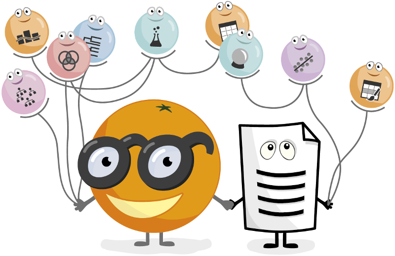
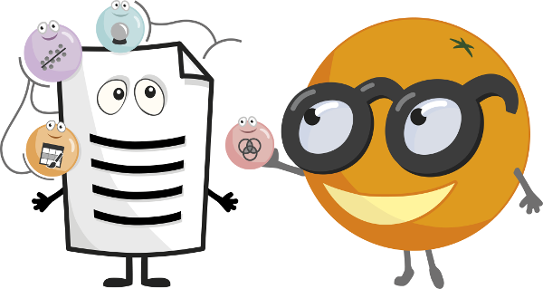

Open source machine learning and data visualization for novice and expert. Interactive data analysis workflows with a large toolbox.

Jul 25, 2019
One of Orange’s latest features is its add-on for single-cell data analytics. Read more >
Jul 2, 2019
How to teach text mining and data science to the 9th grade students in 60 minutes? Read more >
Interactive Data Visualization
Perform simple data analysis with clever data visualization. Explore statistical distributions, box plots and scatter plots, or dive deeper with decision trees, hierarchical clustering, heatmaps, MDS and linear projections. Even your multidimensional data can become sensible in 2D, especially with clever attribute ranking and selections.
Visual Programming
Interactive data exploration for rapid qualitative analysis with clean visualizations. Graphic user interface allows you to focus on exploratory data analysis instead of coding, while clever defaults make fast prototyping of a data analysis workflow extremely easy. Place widgets on the canvas, connect them, load your datasets and harvest the insight!

Teachers and Students Love It
When teaching data mining, we like to illustrate rather than only explain. And Orange is great at that. Used at schools, universities and in professional training courses across the world, Orange supports hands-on training and visual illustrations of concepts from data science. There are even widgets that were especially designed for teaching.

Add-ons Extend Functionality
Use various add-ons available within Orange to mine data from external data sources, perform natural language processing and text mining, conduct network analysis, infer frequent itemset and do association rules mining. Additionally, bioinformaticians and molecular biologists can use Orange to rank genes by their differential expression and perform enrichment analysis.


Ferenc Borondics, Ph.D.
Principal beamline scientist at SMIS
SOLEIL synchrotron, France
"The scientific community is in need of tools that allow easy construction of workflows and visualizations and are capable of analyzing large amounts of data. Orange is a powerful platform to perform data analysis and visualization, see data flow and become more productive. It provides a clean, open source platform and the possibility to add further functionality for all fields of science."
Gad Shaulsky, Ph.D.
Molecular biologist and Director of Graduate Studies
Baylor College of Medicine, Houston, USA
"My laboratory produces large amounts of data from RNA-seq, ChIP-seq and genome resequencing experiments. Orange allows me to analyze my data even though I don’t know how to program. It also allows me to communicate with my collaborators, who are experts in data mining, and with my colleagues and trainees."
Riccardo Bellazzi, Ph.D.
Chair, Centre for Health Technologies
University of Pavia, Italy
"Orange is a great teaching tool, and students love it, because it is easy to use and it allows devoting attention to the high-level conceptual aspects of data mining. The program successfully helps to introduce data analytics to users with no programming experience."